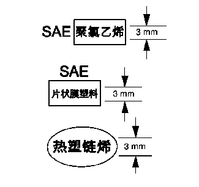

如何识别塑料件

塑料件可用美国汽车工程师协会 (SAE) 代码和/或塑料特点识别，SAE代码通常位于零件后部。了解塑料类型有助于选择正确的维修材料和维修程序。
查找印在零件上的美国汽车工程师协会 (SAE) 代码。
找到代码
将代码与塑料识别表中的代码匹配，确定塑料是热塑性塑料还是热固性塑料，是硬塑料还是挠性塑料。参见
塑料识别和整修系统
。
未找到代码
警告：
勿用塑料燃烧测试法区分塑料的类型。燃烧测试会产生有害烟气。
按如下一种或两种测试方法，确定零件是热塑性（聚烯烃）塑料还是热固性（非聚烯烃）塑料。
浮力测试
1.
从零件背部切一块塑料片。
塑料片上应无脱模剂和油漆。
2.
将塑料片放入一个盛有水的容器内。
•
热塑性聚烯烃浮起
•
热固性非聚烯烃下沉
磨耗测试
•
用 36 级 Roloc 砂盘在损坏部位旁边砂光出一个斑点。
•
热塑性（聚烯烃）材料在砂光时熔化或磨损。
•
热固性非聚烯烃材料会打磨得很干净。
热塑性塑料和热固性塑料既可以是硬塑料，也可以是挠性塑料。热塑性塑料件最好用热熔挤出式塑料焊机维修，但通常都是进行更换。热固性塑料可用环氧树酯或其它更硬的双组份维修材料维修。
•
对于硬热固性维修材料，参见
刚性塑料件维修材料
。
•
对于挠性热固性维修材料，参见
挠性塑料件维修材料
。
•
对于一般维修指南，参见
一般塑料维修
。